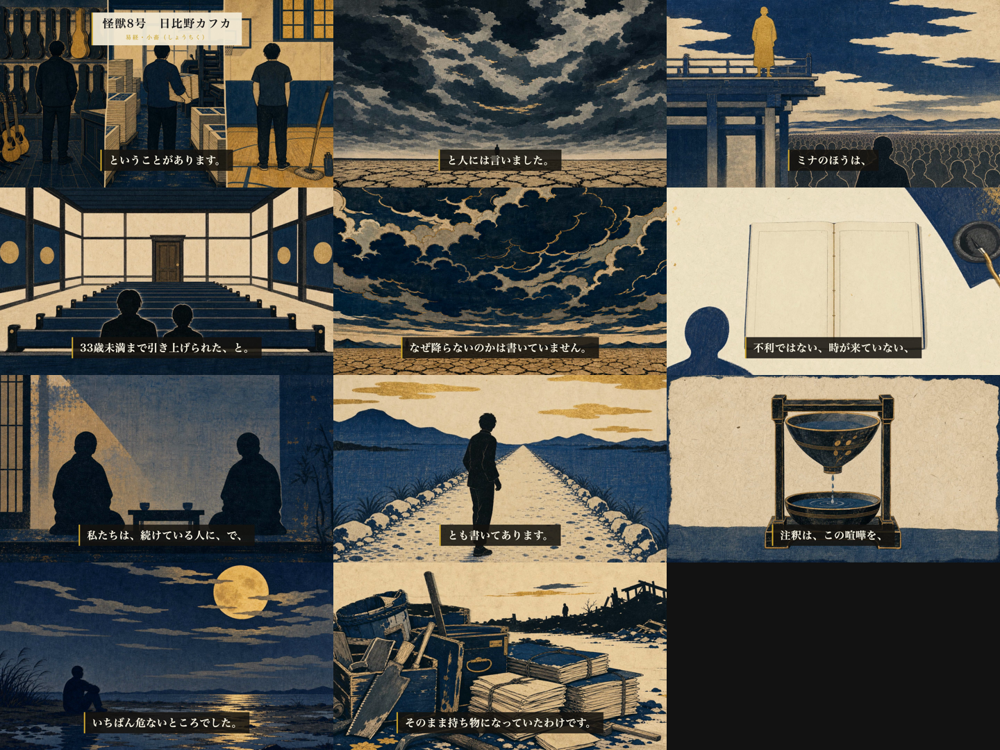

HaQei / アニメと易経 ─ 第47話 通し視聴（3種承認の3つ目・最後）
怪獣8号（日比野カフカ）× 小畜（しょうちく）。8分42秒・30シーン。完成しました。通して見て、公開してよいかを決めてください。
※確認用の軽量版（854×480・16MB）です。公開するのは 1920×1080・801MB の本編です。

| 検査 | 結果 | 中身 |
|---|---|---|
| 黒落ち（シーン境界） | ✅ ゼロ | 29境界×2点＝58フレームの平均輝度を実測。最小53.7／不具合時の実測値は28〜42。ep1-38に存在した「境界で絵が消えて字幕だけ黒地に浮く」現象は出ていません |
| TTS読み | ✅ 誤読ゼロ | 6件→1件→0件。最大の危険は種明かしの「陽、陽、陽、陰、陽、陽」が「ヒ・ヒ・ヒ・カゲ・ヒ・ヒ」と読まれていたこと。六爻図を見せながら音声が別物を言う事故を防ぎました |
| 字幕 | ✅ PASS | 単調性・全文一致・カット順・表示時間（最低0.5秒）・語境界。すべて緑 |
| 冒頭オーバーレイ | ✅ 0〜8秒 | 「怪獣8号 日比野カフカ」「易経・小畜（しょうちく）」 |
| 画像の識別監査 | ✅ 29/29「不明」 | ブラインドで作品・キャラを同定できない。顔・固有意匠・文字・写実化のいずれもなし |
| モーション | ✅ 崩れゼロ | 全29カットの最終フレームを1枚に並べて目視確認 |
| 台本 | ✅ 本文は承認時と完全一致 | ご承認後に変わったのは読み仮名（tts_text）だけ。機械比較で証明済み |
3つの承認の最後です。これを通すとサムネイル・タイトル・概要欄を作り、8月11日 04:00 の枠へ予約します（公開ボタンはあなたが押します）。
台帳の証跡は「本文不変の証明つきで承認を再記録する」形で整えます。私の推奨はこれです。動画の中身に問題はなく、残っているのは記録の整合だけだからです。
お好きな曲を渡してください（Sunoの書き出しで構いません）。mean −32dB に整音して載せ替え、再レンダします。30分ほどで戻せます。
時刻（「4分20秒のところ」）か、シーンID（V_03_08）で指定してください。該当箇所だけ直して再レンダします。
読み仮名の修正を破棄して承認時の台本へ完全に戻し、台本ステージから正規の手順で通し直します。読み間違い（陽→ヒ など）が復活するので、私は勧めませんが、記録の厳密さを優先するならこちらです。
第47話 / content/067 / 怪獣8号（日比野カフカ）× 小畜 / H58 痛み先頭転換コホート5本目 ─ 2026-07-29。
本編 releases/067/ep47.mp4（1920×1080・8分42秒・801MB）／公開枠 2026-08-11（月）04:00 JST 確保済み。